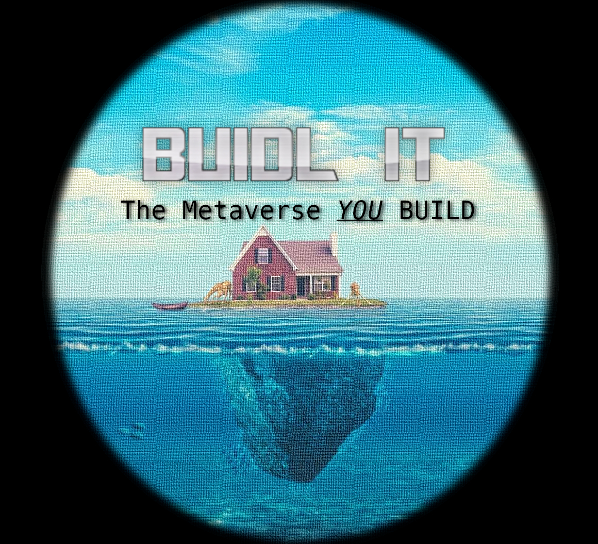
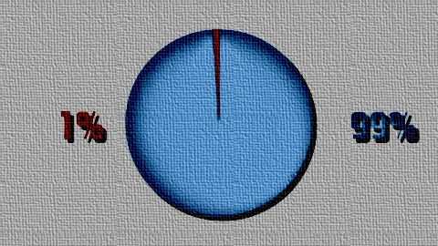
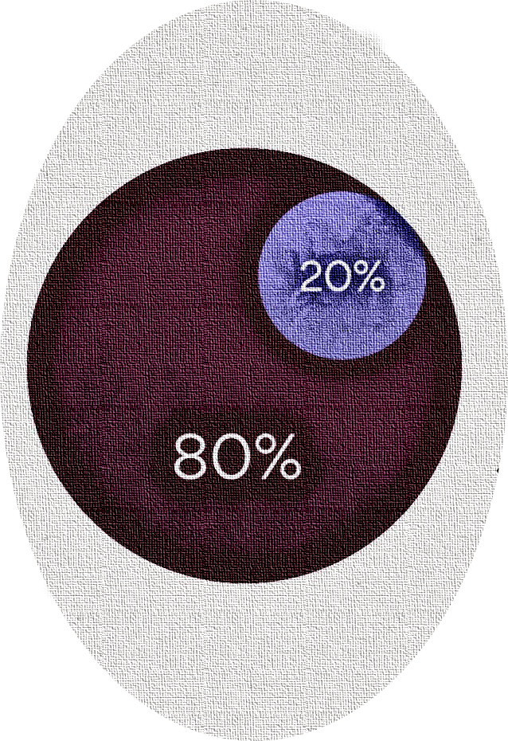

This
is your basic TOKENOMIC designed by a team of one.
What is the tokenomic???
gamers buying models to include in their world generate income to NFT rewards 80%
programmers offering skills and time get paid by gamers and this income goes to NFT rewards 80%
stakers stabilize price
80% of all sales of token and NFT got straight in to staking liquidity and the rewards pool
rewards available from 90 days
staking periods 3, 6 and 9 months

the remaining tokens will be to the dev and marketing fund
used to pay artists and coders initially to develop some features
a fair proportion of these tokens will be burned ad hoc each month, increasing the overall value.
from 15000000 tokens minted, 99 % are to be split between liquidity and staking contracts.
the rest of the tokens are split between dev / marketing / treasury
thats it!.
99% to the token sale and staking contract which will both be verified and renounced before sales start.
1% to marketing/dev/treasury.
80% of any other sales or taxes generated by any actions present or future on tha platform,
to be directed to rewards pool which is shared 50/50 between NFT HOLDERS and STAKERS.
20% to marketing/dev/burn

yes STAKERS also benefit from all actions on the platform
.